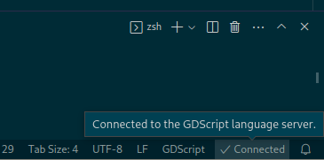

Sử dụng trình soạn thảo văn bản bên ngoài
Trang này giải thích cách viết code bằng một trình soạn thảo văn bản bên ngoài.
Ghi chú
Để viết code C# trong một trình soạn thảo bên ngoài, xem hướng dẫn C# về cấu hình trình soạn thảo bên ngoài.
Godot có thể được dùng cùng một trình soạn thảo văn bản bên ngoài, chẳng hạn Sublime Text hoặc Visual Studio Code. Hãy mở các cài đặt trình chỉnh sửa liên quan: Editor > Editor Settings > Text Editor > External

Mục Text Editor > External trong Editor Settings
Có hai trường văn bản: đường dẫn file thực thi và các cờ dòng lệnh. Các cờ cho phép bạn tích hợp trình soạn thảo với Godot, truyền cho nó đường dẫn file cần mở và các đối số liên quan khác. Godot sẽ thay thế các placeholder sau trong chuỗi cờ:
Trường trong Exec Flags |
Được thay bằng |
|---|---|
|
Đường dẫn tuyệt đối đến thư mục dự án |
|
Đường dẫn tuyệt đối đến file |
|
Số cột của lỗi |
|
Số dòng của lỗi |
Một số ví dụ Exec Flags cho các trình soạn thảo khác nhau:
Trình chỉnh sửa |
Exec Flags |
|---|---|
Geany/Kate |
|
Atom |
|
JetBrains Rider |
|
Visual Studio Code |
|
Vim (gVim) |
|
Emacs |
|
Sublime Text/Zed |
|
Visual Studio* |
|
*: Các đối số không được tự động phát hiện, nên bạn phải tự điền vào.
Kể từ Godot 4.5, Exec Flags được tự động phát hiện cho mọi trình soạn thảo liệt kê ở trên (trừ khi được đánh dấu sao). Bạn không cần dán chúng từ trang này để mọi thứ hoạt động, trừ khi trình soạn thảo của bạn có tên file thực thi không được nhận diện tự động (ví dụ một bản fork của trình soạn thảo được liệt kê ở đây).
Ghi chú
Với Visual Studio Code trên Windows, bạn sẽ phải trỏ đến file code.cmd.
Với Emacs, bạn có thể gọi emacsclient thay cho emacs nếu dùng chế độ server.
Với Visual Studio, bạn sẽ phải tự mở file solution .sln để dùng được các tính năng của IDE. Ngoài ra, nó sẽ không nhảy đến một dòng cụ thể.
Tự động tải lại các thay đổi của bạn
Để trình chỉnh sửa Godot tự động tải lại mọi script đã bị thay đổi bởi trình soạn thảo văn bản bên ngoài, hãy bật Editor > Editor Settings > Text Editor > Behavior > Auto Reload Scripts on External Change.
Sử dụng trình soạn thảo bên ngoài trong Debugger
Việc dùng trình soạn thảo bên ngoài trong debugger được quyết định bởi một tùy chọn riêng trong cài đặt. Để biết chi tiết, xem Các công cụ và tùy chọn debug của trình chỉnh sửa script.
Các plugin chính thức cho trình soạn thảo
Chúng tôi có các plugin chính thức cho những trình soạn thảo code sau:
Hỗ trợ LSP/DAP
Godot hỗ trợ Language Server Protocol (LSP) để tự động hoàn thành code và Debug Adapter Protocol (DAP) để debug. Bạn có thể xem danh sách client LSP và danh sách client DAP để biết trình soạn thảo của bạn có hỗ trợ chúng không. Nếu có, bạn sẽ tận dụng được các tính năng này mà không cần plugin riêng.
Để dùng các giao thức này, một instance Godot phải đang chạy trên dự án hiện tại của bạn. Sau đó bạn cần cấu hình trình soạn thảo để giao tiếp với các cổng adapter đang chạy trong Godot, mặc định là 6005 cho LSP và 6006 cho DAP. Bạn có thể đổi các cổng này và các cài đặt khác trong Editor Settings, lần lượt ở các mục Network > Language Server và Network > Debug Adapter.
Dưới đây là một số bước cấu hình cho các trình soạn thảo cụ thể:
Visual Studio Code
Bạn cần cài đặt plugin Visual Studio Code chính thức.
Với LSP, làm theo các hướng dẫn này để đổi cổng LSP mặc định. Trạng thái kết nối có thể được kiểm tra trên thanh trạng thái:

Với DAP, hãy chỉ định thuộc tính debugServer trong file launch.json của bạn:
{
"version": "0.2.0",
"configurations": [
{
"name": "GDScript Godot",
"type": "godot",
"request": "launch",
"project": "${workspaceFolder}",
"port": 6007,
"debugServer": 6006,
}
]
}